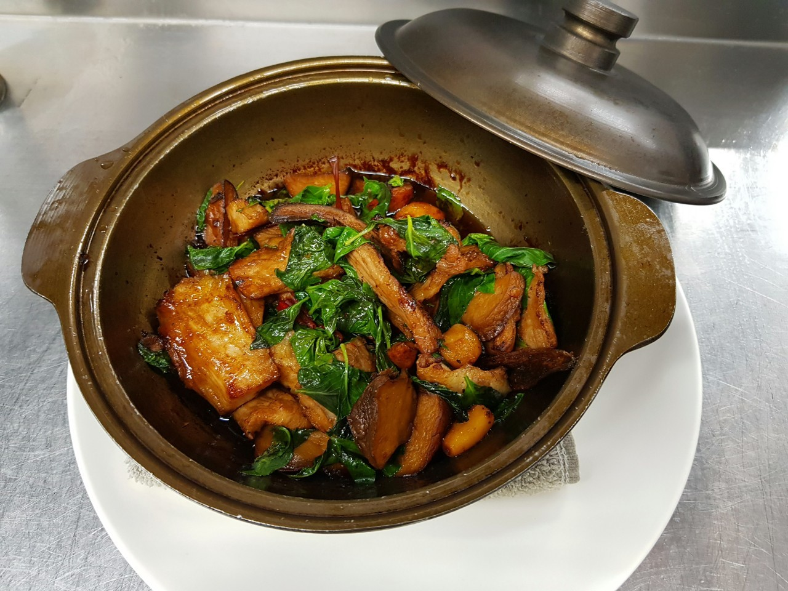
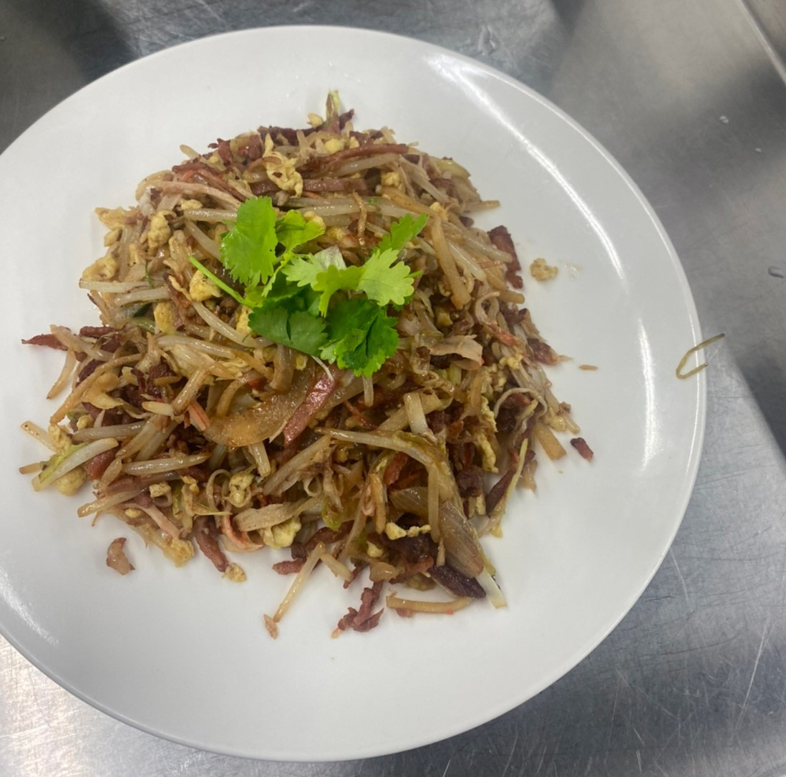

| 成品照 | 菜名 | 作法 |
|---|---|---|
|  | 三杯松阪豬 |
蒜頭去頭尾，辣椒切菱形片，杏鮑菇切滾刀塊，薑去皮切片，九層塔去梗留葉子，松阪豬去筋膜切厚片， 松阪豬醃製醬油，杏鮑菇、蒜頭、辣椒、薑片過油炸至金黃後取出備用，熱油鍋放入醃製過的松阪豬煎炒至微焦取出， 加入香油爆香放入松阪豬、醬油胡椒粉糖味精胡椒粉米酒辣椒醬拌均勻後放入蒜頭杏鮑菇燜煮約兩分鐘至稍微收乾放入辣椒片 |
|  | 桂花炒三絲 |
豆芽去頭尾蟹味棒撕碎火腿切絲叉燒對半切絲洋蔥切絲韭黃切段桶筍切絲美生菜修碗狀修下來的部分切絲蛋打勻 干貝撕成絲挑出貝柱過油炸金黃叉燒過油稍微泡一下蛋炒散炒上色倒出 下洋蔥韭黃拌炒加少許油炒香下火腿下筍絲下銀芽炒香下叉燒米酒嗆香加調味料加60g水拌勻下蛋下蟹肉絲均勻撒入加美生菜香油炒香盛盤撒上干貝絲 |